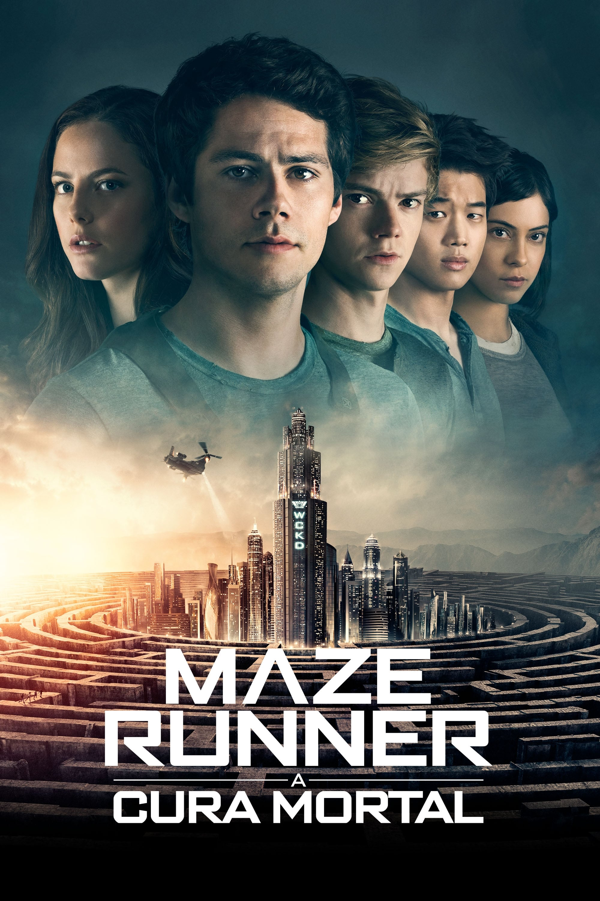

Cronologia dos Filmes
Maze Runner: Correr ou Morrer (2014)
Thomas acorda em um labirinto gigante com um grupo de garotos que não têm memória do mundo exterior além de sonhos estranhos sobre uma organização misteriosa.
Maze Runner: Prova de Fogo (2015)
Thomas e seus companheiros clareanos enfrentam seu maior desafio: procurar por pistas sobre a organização poderosa conhecida como CRUEL.

Maze Runner: A Cura Mortal (2018)
No capítulo final da saga Maze Runner, Thomas lidera seu grupo de Clareanos em sua missão final e mais perigosa.